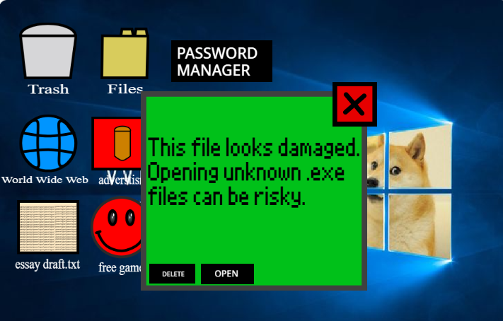
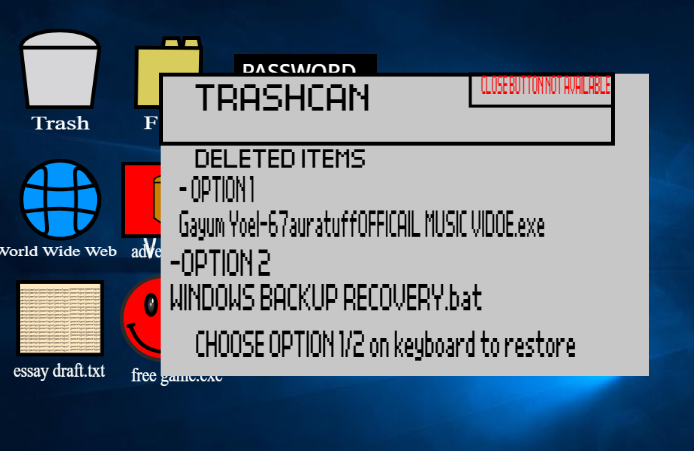
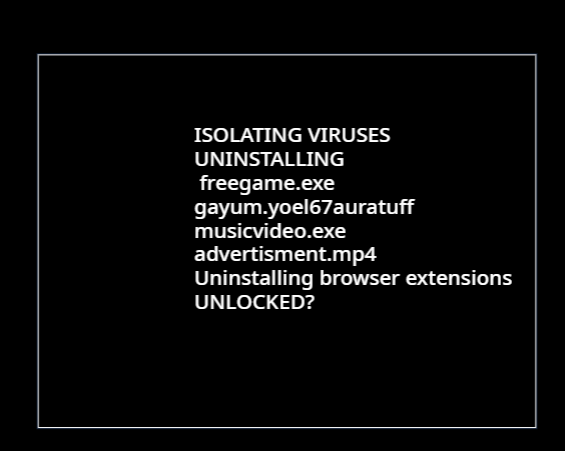

In-Game Visual's

Virus Infection
Opening Corrupt.exe triggers a glitch sequence and eventual crash.

System Recovery
Pick the real system file from the trash bin to restore Adam's computer.

System Restored
Complete every task to reach the winning ending.